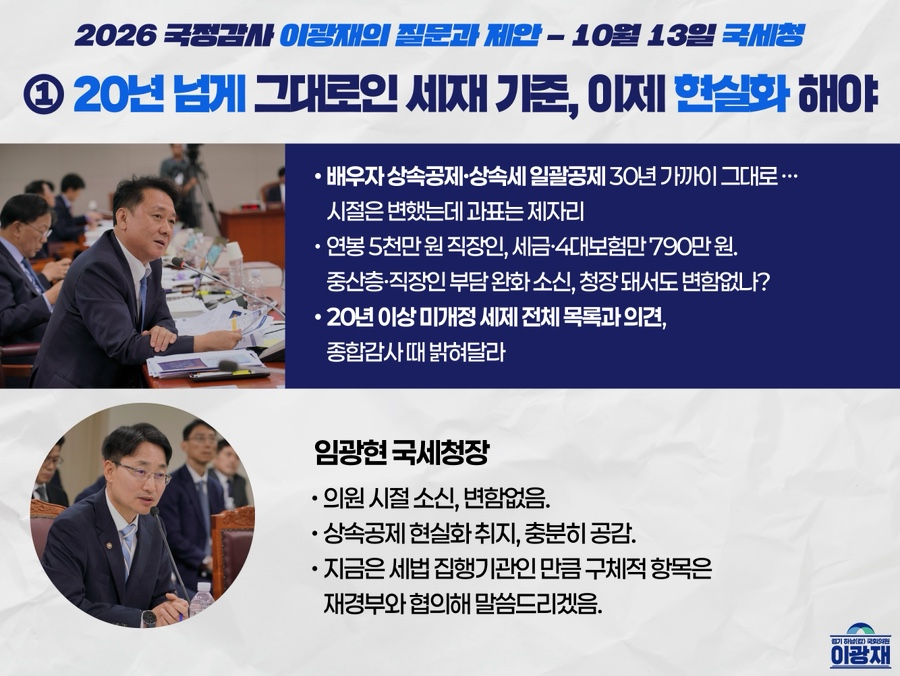
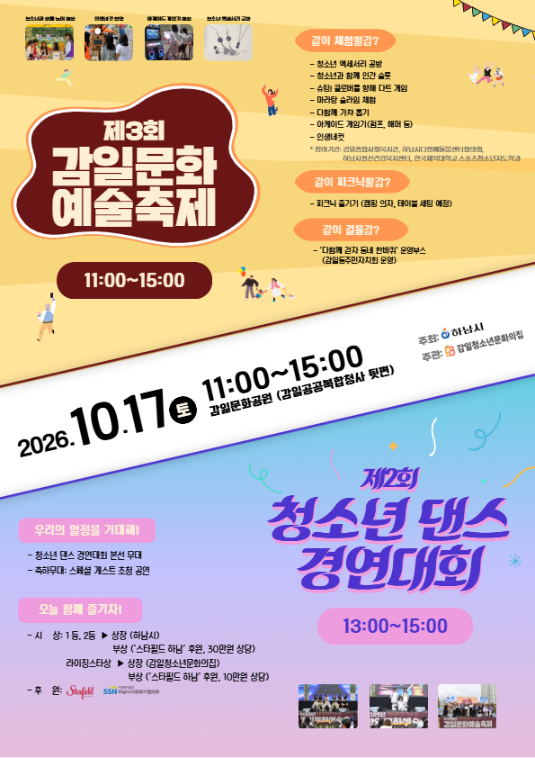
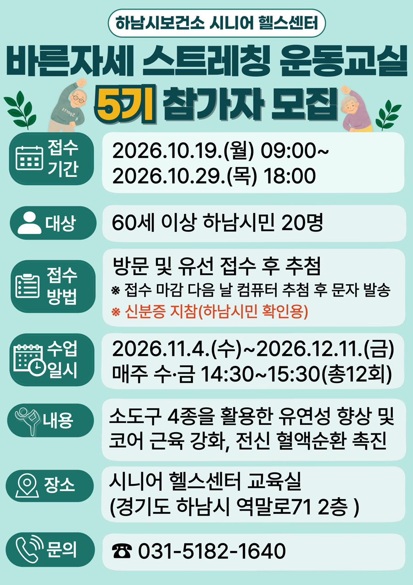
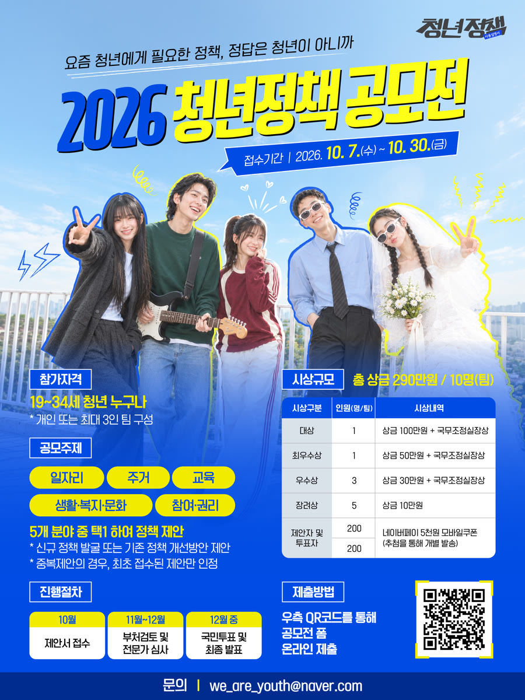

59호 | 2026년 10월 16일 발행
📌 이번 호 주요 목차
 우리동네 국회의원 이광재
우리동네 국회의원 이광재
📋 공약이행
이광재의원 "하남교육지원청, 약속을 지켰습니다" 안민석 교육감 신설 공언… 내년 9월 개청 목표
하남교육지원청 신설 확정, 내년 9월 개청 목표
임시청사(종합복지타운) 먼저 개청 · 본청은 원도심(신장동)
• 안민석 경기도교육감, 하남교육지원청 신설 공언 — 2030년 이후로 점쳐지던 일정 앞당겨 내년 9월 개청 목표
• 종합복지타운 임시청사에서 먼저 문 열고, 본청은 원도심(신장동)에 자리
• 교산지구로 이전 예정인 남한중·하남천현초 부지 등 검토
• 당선 직후 교육부 장관 면담, 경기도교육청·교육부와 수차례 실무 협의
• 신도시 과밀학급과 원도심 학교 소멸 고민을 하남에서 직접 해결
• "본청 개청 국비 확보와 실무 협의에 온 힘을 다하겠습니다"
• 종합복지타운 임시청사에서 먼저 문 열고, 본청은 원도심(신장동)에 자리
• 교산지구로 이전 예정인 남한중·하남천현초 부지 등 검토
• 당선 직후 교육부 장관 면담, 경기도교육청·교육부와 수차례 실무 협의
• 신도시 과밀학급과 원도심 학교 소멸 고민을 하남에서 직접 해결
• "본청 개청 국비 확보와 실무 협의에 온 힘을 다하겠습니다"
📌 출처: 이광재 공식 네이버 블로그
📝 현장일지
이광재의원, 국세청 국정감사 "20년 넘은 세제 기준 현실화하고 조세전문법원 세워야"
• 30년 가까이 그대로인 배우자 상속공제·상속세 일괄공제 등 20년 넘은 세제 기준 현실화 촉구
• 땀 흘린 근로소득에 보상, 스톡옵션은 받을 때가 아닌 팔 때 과세해야
• 100억 원 이상 조세소송 패소율 37.1%… 조세전문법원 설립 제안
• 해외 서버 불법도박 등 지하경제 과세 강화, 가상자산 과세는 청년에 대한 사과부터
• 임광현 국세청장 "상속공제 현실화 취지 공감, 조세전문법원 검토할 시기"
• 땀 흘린 근로소득에 보상, 스톡옵션은 받을 때가 아닌 팔 때 과세해야
• 100억 원 이상 조세소송 패소율 37.1%… 조세전문법원 설립 제안
• 해외 서버 불법도박 등 지하경제 과세 강화, 가상자산 과세는 청년에 대한 사과부터
• 임광현 국세청장 "상속공제 현실화 취지 공감, 조세전문법원 검토할 시기"

📌 출처: 이광재 공식 네이버 블로그
📝 현장일지
이광재의원 "정치를 격투기에서 기록 경기로" 국가데이터처·조달청 국감서 '삶의 성적표' 제안
• 산부인과·응급의학과 전문의 없는 지역 10곳, 청년이 떠나는 지역 157곳 — GDP는 올라도 꿈쩍 않는 '유령 GDP'
• 일자리·주거·보육·교육·의료 등 삶의 지표를 전국 시군구마다 같은 기준으로 측정해 반년마다 순위 공개 제안
• 국회의원·단체장 모두 '삶의 성적표'로 평가받는 구조
• 조달청에 '운찰제' 개선과 공공조달 전체 AI 가격 검증 요구
• "데이터로 승부하는 기록 경기로 바꾸는 것이 진짜 정치 혁명"
• 일자리·주거·보육·교육·의료 등 삶의 지표를 전국 시군구마다 같은 기준으로 측정해 반년마다 순위 공개 제안
• 국회의원·단체장 모두 '삶의 성적표'로 평가받는 구조
• 조달청에 '운찰제' 개선과 공공조달 전체 AI 가격 검증 요구
• "데이터로 승부하는 기록 경기로 바꾸는 것이 진짜 정치 혁명"
📌 출처: 이광재 공식 네이버 블로그
📰 언론보도
[연합뉴스] 이광재의원 "국내엔 강하고 외국계엔 약한 구조" 국세청 초고액 세금소송 38% 패소
이광재 의원이 국세청에서 받은 자료에 따르면 2022년부터 올해 6월까지 종결된 100억 원 이상 행정소송 214건 중 82건(38.3%)에서 국세청이 패소했습니다. 전체 평균 패소율 11.3%의 3배가 넘고, 올해 상반기 초고액 소송 패소액의 59.4%인 3,255억 원은 외국계 기업 상대 소송에서 나왔습니다. 이 의원은 "패소하면 혈세로 이자와 소송비용까지 물어줘야 한다"며 국제조세 대응 역량을 키우고 AI로 과세 단계부터 법적 위험을 줄여야 한다고 강조했습니다.
📌 출처: 연합뉴스 (정연솔 기자)
📰 하남 지역 주요 뉴스
🏛️ 시정/의회
최승태 하남시의원, 하남도시공사 사장 재임용 "'적격자 없음' 근거 없어"… 심사 기준·회의록 공개 요구
하남시의회 최승태 의회운영위원장이 14일 행정사무감사 첫날 하남도시공사 사장 재임용 절차를 다시 따져 물었습니다. 임원추천위원회가 두 차례 '적격자 없음' 판정을 내렸지만 내규에 판단 기준이 없었고, 기준을 정하는 별도 의결도 없었다는 지적입니다. 최 의원은 하남시가 적법한 인사라고 설명해 온 만큼 심사 기준과 회의록, 의결 근거를 공개하라고 요구했습니다. 중대한 절차적 하자가 임명에 영향을 미쳤다면 재임용 효력과 직무집행정지 가처분까지 검토해야 한다고도 밝혔습니다.
📌 출처: 서울신문 (서울Pn)
🪖 안전/생활
육군 55사단, 10월 19~23일 하남 등 경기 동남부서 '2026 호국훈련'… 병력·차량·헬기 이동 많아
육군 제55보병사단이 10월 19일부터 23일까지 하남·구리·남양주·광주·성남 등 경기 동남부 일대에서 '2026년 호국훈련'을 실시합니다. 민·관·군·경·소방이 함께 참여해 국가중요시설 테러와 침투 등에 대비한 통합방위태세를 점검하고, 주요 시설에서 대테러·대침투 실제훈련도 진행합니다. 훈련 기간에는 병력과 장비, 차량, 헬기 이동이 많을 예정이어서 사단은 훈련지역에 안전통제관을 배치하고 주민 불편사항을 접수하는 전화 창구를 운영합니다.
📌 출처: 성남포커스
💬 하남 맘카페 HOT 이슈
이번 주 하남 지역 맘카페(미사맘스클럽, 아이품애, 정다운 감일맘, 하남맘 등)에서 많이 오르내린 HOT 이슈 TOP 3입니다.
1️⃣ [교육] "드디어 하남교육청이 따로 생기네요"… 하남교육지원청 내년 9월 개청 소식에 학부모들 반색
현황: 지난 15일 하남종합복지타운에서 열린 경기도교육감 타운홀미팅 직후, 하남 맘카페들이 하남교육지원청 분리·신설 소식으로 들썩였습니다. 미사맘스클럽에는 행사 일주일 전부터 하남 교육 현안과 신설 고교 개교 문제를 직접 건의할 기회라며 참석을 권하는 글이 올라왔고, 당일에는 교육감이 내년 9월 개청을 약속했다며 반기는 글이 이어졌습니다. 하남미사교산4050 카페에는 예상보다 일정이 앞당겨졌다는 참석 후기와 관련 기사가 잇따라 공유됐고, 감일스윗시티·아이품애·경기동부맘스쿨에도 도내 통합교육지원청 가운데 하남이 처음으로 분리된다는 기사가 올라왔습니다. 그동안 광주와 묶여 있어 불편했던 점을 짚으며 학교 신설과 배정 업무가 더 빨라지길 기대한다는 목소리가 많았습니다.
💡 주민 포인트: 정식 개청 전까지는 지금처럼 광주하남교육지원청이 하남 지역 학교 업무를 맡으므로, 학교 배정·전학 등 민원은 기존 교육지원청 누리집에서 확인하세요. 내년 초등학교 통학구역안도 11월 4일까지 의견을 받고 있습니다(아래 공공기관 소식지 참고).
💬 주민 반응: 하남 교육행정이 드디어 독립한다며 반기는 분위기 속에, 과밀학급·학교 신설 문제 해결로 이어지길 바란다는 기대가 컸습니다.
📌 출처: 네이버 카페 (미사강변도시 미사맘스클럽, 하남미사교산4050, 감일스윗시티, 아이품애, 경기동부맘스쿨)
2️⃣ [교육] "수학학원, 어디로 옮겨야 할까요?"… 2학기 중간고사 끝나고 학원 고민 글 이어져
현황: 2학기 중간고사가 마무리되면서 학원을 옮기거나 새로 알아보는 글이 여러 카페에 올라왔습니다. 위례에서 공부하기 카페에는 수학을 좋아하는 초3 아이가 또래와 함께 공부할 수학학원을 찾는 글, 일대일로 꼼꼼히 봐 주면서 진도도 탄탄한 곳을 묻는 글, 의지 없이 다니는 것 같은 국어학원을 바꿀지 고민하는 글이 이어졌습니다. 이사 온 뒤 방과후 수업과 학원 시간이 자꾸 겹쳐 스케줄 짜기가 힘들다는 하소연도 있었습니다. 위례맘홀릭에는 개념과 현행을 잡아 주는 고학년 수학학원과 영어도서관 추천 요청이, 정다운 감일맘에는 단샘초 1학년 수학학원을 묻는 글이 올라왔고, 미사맘스클럽에는 고1 중간고사를 마친 학부모의 후기도 공유됐습니다.
💡 주민 포인트: 학원을 정하기 전 '나이스 대국민서비스'의 학원·교습소 정보 조회에서 등록 여부와 교습과정, 신고된 교습비를 확인할 수 있습니다. 교재비 등 추가 비용과 환불 기준도 등록 전에 꼭 물어보세요.
💬 주민 반응: 학원 이름보다 아이 성향과 동선, 숙제 양을 먼저 따져 보라는 선배 학부모들의 조언이 이어졌습니다.
📌 출처: 네이버 카페 (위례에서 공부하기, 위례맘홀릭, 정다운 감일맘, 미사강변도시 미사맘스클럽)
3️⃣ [가족건강] "올해 건강검진 아직 안 받았어요"… 연말 앞두고 국가검진·내시경 병원 문의 늘어
현황: 연말이 다가오면서 아이가 아닌 엄마 자신과 가족의 건강검진을 챙기려는 글이 여러 카페에 올라왔습니다. 미사맘스클럽에서는 국가건강검진에 대장내시경을 추가하려는데 병원별 가격 차이가 크다는 글, 병원을 꺼리는 시아버지를 위해 온 가족이 함께 검진받을 곳을 찾는 글, 장 정결제 복용이 생각보다 힘들다는 후기가 이어졌습니다. 미사맘네스트에는 설명을 꼼꼼히 해 주는 검진센터를 묻는 글이, 하남맘 모여라에는 이사 온 지 얼마 안 돼 풍산동 인근 검진 병원을 찾는 글이 올라왔습니다. 아이품애에는 부모님 대상포진 예방접종 비용이 부담된다는 글도 있었습니다.
💡 주민 포인트: 국가건강검진은 해당 연도 12월 31일까지 받아야 하며, 대상 여부와 가까운 지정 검진기관은 국민건강보험공단 누리집이나 'The건강보험' 앱에서 조회할 수 있습니다. 12월에는 예약이 몰리니 10~11월 중 미리 예약해 두세요.
💬 주민 반응: 아이 건강만 챙기다 정작 부모 건강은 뒷전이었다는 공감 속에 검진기관과 비용 정보를 서로 나누는 분위기입니다.
📌 출처: 네이버 카페 (미사강변도시 미사맘스클럽, 미사맘네스트, 하남맘 모여라, 모담모담, 아이품애, 하강맘)
🎭 ALL IN 하남라이프
2026년 10월 16일 기준 한눈에 보는 하남시 최신 문화·행사·교육 안내 가이드
🎪 10.17(토) 11:00~15:00 | 감일문화공원 · 체험부스+청소년 댄스 본선
[축제] 제3회 감일문화예술축제 & 제2회 청소년 댄스 경연대회 (하남시 주최 · 감일청소년문화의집 주관)
"인생네컷·아케이드 게임·피크닉 존까지, 이번 토요일은 감일문화공원에서!"
감일청소년문화의집이 여는 동네 축제입니다. 오전부터 체험 부스와 피크닉 존이 운영되고, 오후에는 청소년 댄스 경연대회 본선과 축하공연이 이어집니다.
🗓 일정: 10월 17일(토) 11:00~15:00 (댄스 경연대회 본선 13:00~15:00)
📍 장소: 감일문화공원 (감일공공복합청사 뒤편)
🎨 체험: 청소년 액세서리 공방, 인간 슈팅, 다트 게임, 마라탕 슬라임, 가챠 뽑기, 아케이드 게임기(펌프·해머), 인생네컷
🧺 피크닉: 캠핑 의자·테이블 세팅 / '다함께 걷자 동네 한바퀴' 부스 (감일동주민자치회)
🕺 댄스 경연: 본선 무대와 스페셜 게스트 축하공연, 1·2등 하남시 상장과 스타필드 하남 부상
✅ 참여: 별도 사전 신청 안내 없이 현장 방문 (세부 사항은 공지에서 확인)
감일청소년문화의집이 여는 동네 축제입니다. 오전부터 체험 부스와 피크닉 존이 운영되고, 오후에는 청소년 댄스 경연대회 본선과 축하공연이 이어집니다.
🗓 일정: 10월 17일(토) 11:00~15:00 (댄스 경연대회 본선 13:00~15:00)
📍 장소: 감일문화공원 (감일공공복합청사 뒤편)
🎨 체험: 청소년 액세서리 공방, 인간 슈팅, 다트 게임, 마라탕 슬라임, 가챠 뽑기, 아케이드 게임기(펌프·해머), 인생네컷
🧺 피크닉: 캠핑 의자·테이블 세팅 / '다함께 걷자 동네 한바퀴' 부스 (감일동주민자치회)
🕺 댄스 경연: 본선 무대와 스페셜 게스트 축하공연, 1·2등 하남시 상장과 스타필드 하남 부상
✅ 참여: 별도 사전 신청 안내 없이 현장 방문 (세부 사항은 공지에서 확인)

📌 출처: 하남시감일청소년문화의집
🕺 10.24·10.31·11.7(토) 14:00 | 미사 일대 · 무료
[공연·참여] 2026 글로벌 케이팝 댄스 챌린지 인 하남 (하남문화재단)
"관객이 주인공! 미사 거리에서 펼쳐지는 랜덤플레이댄스"
하남문화재단이 여는 무료 야외 K-POP 댄스 행사입니다. 회차마다 관객이 함께하는 랜덤플레이댄스가 열립니다.
🗓 1회차: 10월 24일(토) 14:00, 미사 문화의거리 (미사역 1번 출구 50m 앞) — K-POP 댄서팀 무대
🗓 2회차: 10월 31일(토) 14:00, 미사 C3 모노라운지 상가 앞 — 글로벌 아티스트 교류 무대
🗓 3회차: 11월 7일(토) 14:00, 미사호수공원 잔디광장 — 경연대회 최종 무대
👥 대상: 관람은 누구나 / 경연대회는 초등학생 이상 4인 이상 팀
✅ 경연 신청: 10월 20일(화) 19:00까지 MP4 영상 제출 (신청 링크)
☎️ 문의: 하남문화재단 031-790-7966
하남문화재단이 여는 무료 야외 K-POP 댄스 행사입니다. 회차마다 관객이 함께하는 랜덤플레이댄스가 열립니다.
🗓 1회차: 10월 24일(토) 14:00, 미사 문화의거리 (미사역 1번 출구 50m 앞) — K-POP 댄서팀 무대
🗓 2회차: 10월 31일(토) 14:00, 미사 C3 모노라운지 상가 앞 — 글로벌 아티스트 교류 무대
🗓 3회차: 11월 7일(토) 14:00, 미사호수공원 잔디광장 — 경연대회 최종 무대
👥 대상: 관람은 누구나 / 경연대회는 초등학생 이상 4인 이상 팀
✅ 경연 신청: 10월 20일(화) 19:00까지 MP4 영상 제출 (신청 링크)
☎️ 문의: 하남문화재단 031-790-7966
📌 출처: 하남문화재단
🏛️ 공공기관 소식지
2026년 10월 16일 기준 하남시 공공기관 주요 공고·신청 안내입니다.
🏫 광주하남교육지원청 | ~11.4(수) · 주민 의견 제출
2027학년도 하남시 초등학교 통학구역 설정(안) 행정예고 — 11월 4일까지 의견 접수
"내년 우리 아이 배정 학교, 미리 확인하세요"
2027학년도부터 적용될 하남시 초등학교 통학구역안이 공개됐습니다. 새 아파트 단지가 들어선 지역의 통학구역이 새로 정해지니 해당 지역 학부모님은 꼭 확인해 보세요.
📌 주요 내용: 감일 한라비발디 2차(감이동) 신우초·감일초 공동(일방)통학구역 지정, 단샘초·미사중앙초·신장초 통학구역에 신규 단지 추가 등 (세부 내용은 첨부 통학구역안 확인)
🗓 기간: 10월 15일(목) ~ 11월 4일(수)
👥 대상: 학생, 학부모, 지역주민, 관계기관 등
✅ 방법: 의견서(첨부 서식)를 우편·팩스·전자우편 중 하나로 제출
📮 우편: 하남시 아리수로 600 광주하남교육지원청 하남교육지원센터
📠 팩스: 031-796-6489 / ✉️ 이메일: wowpupu@korea.kr
2027학년도부터 적용될 하남시 초등학교 통학구역안이 공개됐습니다. 새 아파트 단지가 들어선 지역의 통학구역이 새로 정해지니 해당 지역 학부모님은 꼭 확인해 보세요.
📌 주요 내용: 감일 한라비발디 2차(감이동) 신우초·감일초 공동(일방)통학구역 지정, 단샘초·미사중앙초·신장초 통학구역에 신규 단지 추가 등 (세부 내용은 첨부 통학구역안 확인)
🗓 기간: 10월 15일(목) ~ 11월 4일(수)
👥 대상: 학생, 학부모, 지역주민, 관계기관 등
✅ 방법: 의견서(첨부 서식)를 우편·팩스·전자우편 중 하나로 제출
📮 우편: 하남시 아리수로 600 광주하남교육지원청 하남교육지원센터
📠 팩스: 031-796-6489 / ✉️ 이메일: wowpupu@korea.kr
📌 출처: 광주하남교육지원청 (2026.10.15 공지)
🧘 시니어 헬스센터 | 10.19(월)~10.29(목) 접수 · 60세 이상 20명 무료
시니어 헬스센터 「바른자세 스트레칭 운동교실 5기」 참가자 모집 (60세 이상 하남시민)
"굳은 어깨·허리, 소도구로 쭉 펴세요"
소도구 4종으로 유연성과 코어근육을 기르고 전신 혈액순환을 돕는 6주(12회) 운동교실입니다.
📝 접수: 10월 19일(월) 09:00 ~ 10월 29일(목) 18:00 (점심시간 12~13시 제외), 방문 또는 전화 접수 후 추첨
👥 대상: 60세 이상 하남시민 20명
🗓 수업: 11월 4일(수) ~ 12월 11일(금) 매주 수·금 14:30~15:30 (총 12회)
📍 장소: 시니어 헬스센터 교육실 (역말로 71, 덕풍스포츠문화센터 2층)
📢 발표: 마감 다음 날 추첨 후 문자 안내 (방문 접수 시 신분증 지참)
☎️ 문의: 031-5182-1640
소도구 4종으로 유연성과 코어근육을 기르고 전신 혈액순환을 돕는 6주(12회) 운동교실입니다.
📝 접수: 10월 19일(월) 09:00 ~ 10월 29일(목) 18:00 (점심시간 12~13시 제외), 방문 또는 전화 접수 후 추첨
👥 대상: 60세 이상 하남시민 20명
🗓 수업: 11월 4일(수) ~ 12월 11일(금) 매주 수·금 14:30~15:30 (총 12회)
📍 장소: 시니어 헬스센터 교육실 (역말로 71, 덕풍스포츠문화센터 2층)
📢 발표: 마감 다음 날 추첨 후 문자 안내 (방문 접수 시 신분증 지참)
☎️ 문의: 031-5182-1640

📌 출처: 하남시보건소 (시니어 헬스센터)
💡 국무조정실 · 하남시 | ~10.30(금) · 총상금 290만 원
2026년 청년정책 공모전 — 19~34세 청년의 정책 아이디어를 모집합니다
"청년에게 필요한 정책, 청년이 직접 제안하세요"
국무조정실이 여는 전국 공모전으로, 하남시가 청년들의 참여를 안내했습니다.
👥 대상: 만 19~34세 청년 누구나 (개인 또는 최대 3인 팀)
📝 주제: 일자리·주거·교육·생활복지문화·참여권리 중 1개 분야의 새 정책 또는 기존 정책 개선안
🗓 접수: 10월 7일(수) ~ 10월 30일(금) / 11~12월 심사, 12월 국민투표 후 최종 발표
🏆 시상: 총 10명(팀) 290만 원 — 대상 100만 원, 최우수 50만 원, 우수 30만 원(3명), 장려 10만 원(5명)
✅ 방법: 온통청년·청년정책사용설명서 SNS 또는 포스터 QR코드로 온라인 제출
☎️ 문의: 044-200-6338
국무조정실이 여는 전국 공모전으로, 하남시가 청년들의 참여를 안내했습니다.
👥 대상: 만 19~34세 청년 누구나 (개인 또는 최대 3인 팀)
📝 주제: 일자리·주거·교육·생활복지문화·참여권리 중 1개 분야의 새 정책 또는 기존 정책 개선안
🗓 접수: 10월 7일(수) ~ 10월 30일(금) / 11~12월 심사, 12월 국민투표 후 최종 발표
🏆 시상: 총 10명(팀) 290만 원 — 대상 100만 원, 최우수 50만 원, 우수 30만 원(3명), 장려 10만 원(5명)
✅ 방법: 온통청년·청년정책사용설명서 SNS 또는 포스터 QR코드로 온라인 제출
☎️ 문의: 044-200-6338

📌 출처: 하남시 (청년일자리과)
© 2026 우리동네 진짜일꾼 이광재